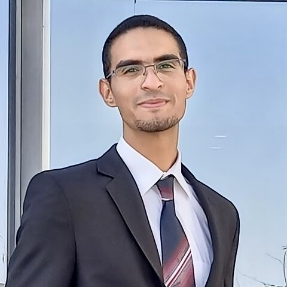

PhD researcher studying how brains gather evidence, accumulate it over time, and decide when to stop, from sequential decision-making in obsessive-compulsive disorder to the dynamics of large-scale neural activity.
Shall I marry this person? Each trait nudges the evidence up (propose) or down (escape), and the dashed boundaries curve inward over time, standing in for the mounting cost of gathering more evidence: time, effort, another date's bill.
Boundaries collapse with time, and evidence leaks too, so early impressions fade.
Disclaimer: these boundaries are arbitrary, not optimal by any known policy. If you propose to someone based on this widget, we waive all responsibility for what happens next.
I am a PhD student in Computational Neuroscience at the University of Tübingen and the Max Planck Institute for Biological Cybernetics, supervised by Prof. Peter Dayan. I came to neuroscience from aerospace engineering and control theory, and my work lives on the bridge between the two: I use ideas from control theory and dynamical systems to understand how people make decisions, and I look for neuroscience-inspired algorithms that could, in turn, help machines act intelligently in the same uncertain world.
My first project models sequential decision-making in OCD as a Partially Observable Markov Decision Process, asking what makes evidence-gathering tip into indecision. Next, I am turning to hierarchical decision-making and meta-control (how people decompose complex tasks across levels and timescales), drawing on the theory of layered control architectures from engineering.
A POMDP account of indecisiveness in obsessive-compulsive disorder. I model the ideal observer's stopping policy, then add interpretable deviations (recency, urgency, and risk) and fit them to behaviour to locate the mechanism behind excessive sampling.
Contraction analysis of continuum neural-field models, and stability conditions for interconnected recurrent neural networks in Hilbert spaces.
An open-source package for large-scale Kuramoto networks, relating structural to functional connectivity. Documentation →
Linked model parameters to oscillatory dynamics through bifurcation analysis of coupled neural populations.
Time-delayed Kuramoto networks under rhythmic stimulation; structural-to-functional connectivity and bifurcation dynamics of coupled Wilson-Cowan populations.